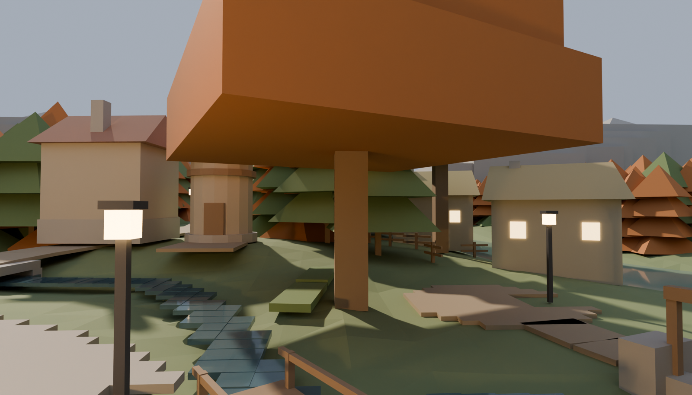
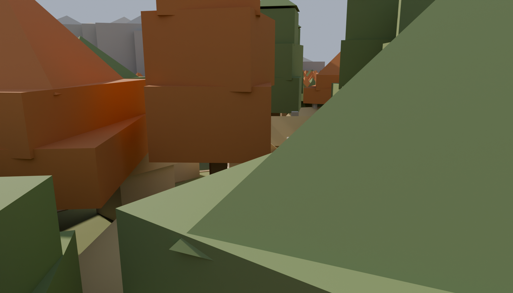
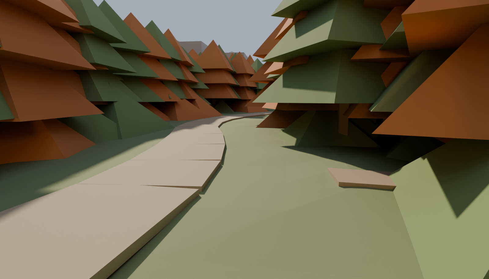
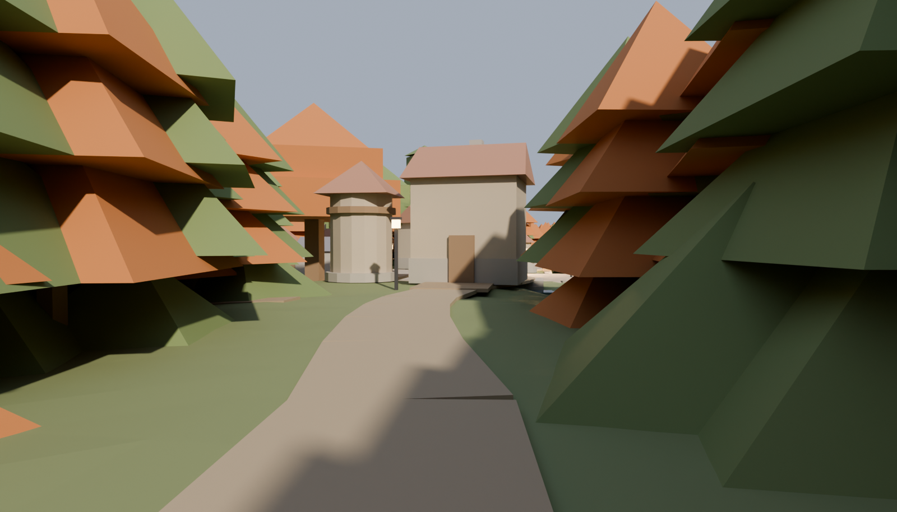
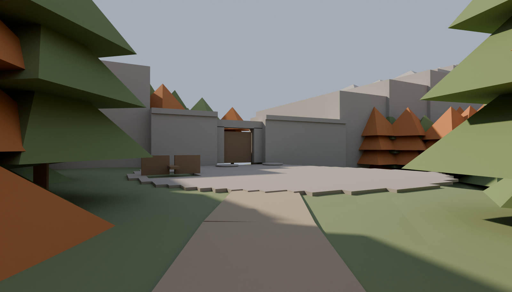
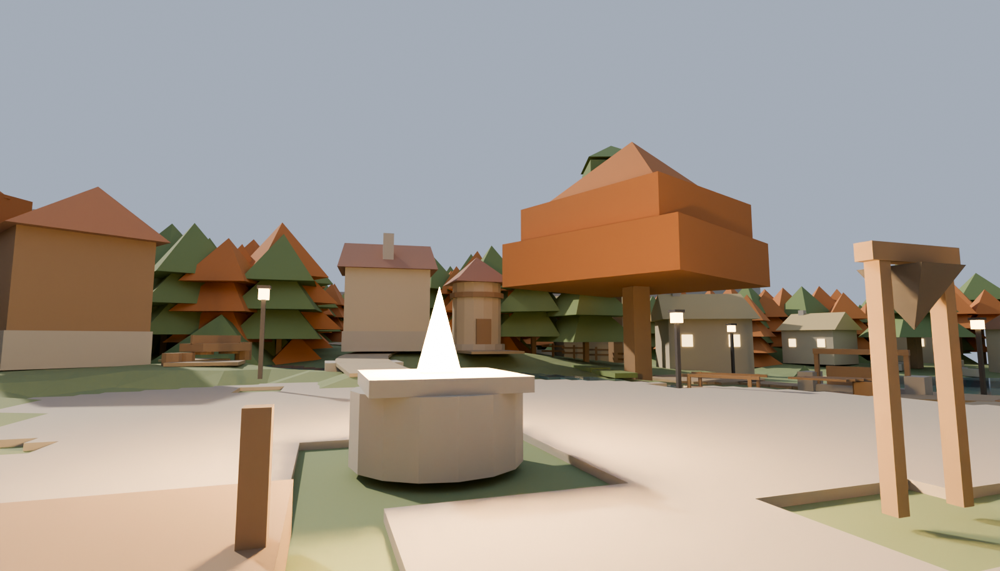
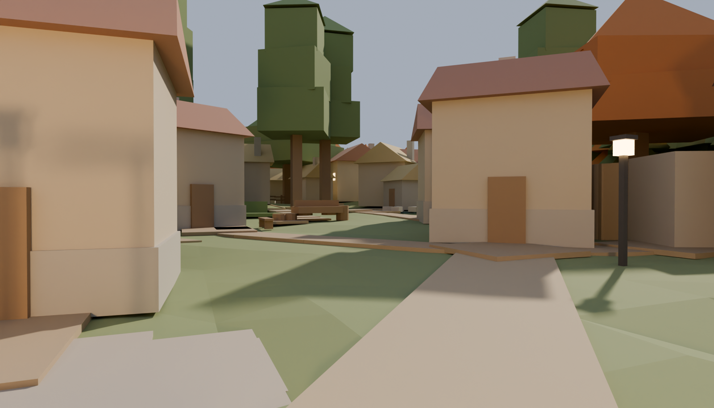

Emberbrook — blockout, round 4: a village inside its forest, and a gate nobody
can see the town from
Gray review frames out of the live master, %Y-%m-%d %H:%M. This round is your town-model
review, built. (1) THE VILLAGE COEXISTS WITH ITS WOOD. The suburban trimmed-hedge
ring around every household is gone: boundaries are now irregular dry-stone rows,
split-rail and paling fragments and bramble clumps, and they are PARTIAL —
each plot bounds a median 29% of its own perimeter where the old ring bounded 94%.
Claimed, not manicured. Thirty-one large individual trees stand among the houses and
over the lanes in three canopy shapes (broad crowns, tall slim forms, the wood's own
conifers); half of all village-lane samples now have a canopy edge within 8 m, and four
trees put their canopy right over a lane — which the forest's own rule would have
forbidden, so the rule was restated rather than waived: the TRUNK clears the walk surface
by 1.20 m and the CANOPY hangs at 4.50 m, above a 1.62 m walker.
(2) FESTIVAL SQUARE IS A ROOM. Sixteen compass sectors swept from the plaza, three
bearings and three elevations each: 6 of 16 ended in a roofline or canopy before this
round, 11 of 16 now.(3) THE OLD GATE HAS MOVED, AND THE WALK TO IT IS THE POINT. It stands
87.1 m from Festival Square where it stood 39.8, reached by 41.1 m of quiet,
curving, wooded road with no households, no lane incidents and no lamps on it —
the same derivation returns 0.0 m of quiet road on the map you last saw. The village
goes out of sight 16.6 m past the last lamp, and over the 24.5 m beyond that point
62% of sampled steps have nothing of the town in sight at all. The seal survived the
move unchanged: 0.00 m of walkable ground between the masonry and the water, 0.00 m
between the masonry and the rock, and a flood fill from the court still reaches
0 m² of the gorge. Nothing downstream has been re-run: no districts, no
cameras, no bakes. Tree and cliff QUALITY is still a dressing-stage bar — these are
placeholder cones and boxes.
quiet-road-warm → quiet-road-threshold → quiet-road-court is the
round's own question, walked in three frames instead of flown in one: the barn's yard and
the last lamp; the point where the town goes out of sight, facing back at it; and
the court opening out of the wood with the sealed gate beyond. Is this the environment
shift you asked for? The finding behind it, in case it matters later: seclusion is
bought by the road's SHAPE, not its length — two longer alternatives were built and
measured WORSE, because a straight road lets the eye follow it home.
square-room and village-trees are the coexistence ruling at eye level.
The five sectors still open off the square are the pond and Pond Lane (east), the mill and
the brook (north-west) and the road in from the arch (south) — the map's own
geography rather than a gap in the ring. Is the tree density "interleaved" or still
ornamental? It is the one number on this board that is a taste call.
gatefield-seal and gatefield-seal-aerial are the notch at its new
latitude. Across the pinch: 5.50 m of wall, the 4.90 m doorway, 3.55 m of founded
wall, 6.95 m of wall carried over the low grate, then rock — against roughly
3.5 m measured off your own gate-final reference. The court is a D, flattened on the water
side, which is what a court squeezed between a gate, a range and a river is.
COST, stated rather than buried: the village trees hide some of the village FROM
itself. Lane samples meeting the 2+ background-roof target went 75% → 59%.
Holding the low-skirted conifers to the village's cool edges bought 7 points of that back
and cost nothing else. If you want the roofs back it is a redline on tree density, and it
is one number to change.
The watermill frame still carries its taste item — the mill pound stands
~1.9 m proud of the natural ground. It ships as built for your call.
town-aerial the whole town from the south-west at 2x: lane runs, the rise, the brook through the middle, the river closing the eastriver-meanders the river's own bends, town beyond: the redline frame — an authored course with meanders, vista only, never walkablesquare Festival Square at 2x: the plaza's 7 m extent did NOT scale with the map, so the inn, the shop and the bakery now stand 11-12 m clear of its rimorchard-approach EYE LEVEL on the gate road inside the arch: the waystone on the verge and the orchard beyond it — a player's-height read on the new distanceshome-lane down Home Row: Lake's, Rowan's, Mara & Pip's — and the brook running ALONGSIDE the lane, which is where the six culverts in a row come fromconfluence the brook slips into the river past the pond — the town's own name, and the join the blockout now carries all the way to the waterarrival-clearing THE GAME'S FIRST FRAME, at eye level: the arrival clearing looking north up the Whisperwood road. No lamp, no village, no roof — the wood is the whole horizon and the road is the only way out of itwaystone-road the Waystone on the quiet climbing road, where Mochi hires himself to Vesper — the wood still pressing both verges, the arch and its lamp another 20 m northwood-aerial the whole approach from the south: the arrival corridor cut through the Whisperwood, the village in its clearing beyond, and how much forest now contains itwatermill the watermill on the brook's upper run: overshot wheel, the leat on its trestles, and the banked millpond that holds the 2.0 m of head the wheel turns on. USER TASTE ITEM: a 2.00 m dam on a valley that falls 2.4 m in total means the pound stands ~1.9 m PROUD of the natural ground behind its embankment. That is hydrology, not a modelling slip — it ships as built for your judgment: keep the hillside mill pound, or drop to the 1.55 m wheel the valley gives for freegatefield-seal THE SEALED PINCH at eye level from the gate court: the Old Gate as ONE structure spanning the notch — twin doors over the road, the curtain wall carrying on east across the channel on its low grate, and the two rock chains closing on both ends of it. Nothing walkable survives between the masonry and the watergatefield-seal-aerial the same pinch from above and behind the village: the valley now has an END rather than an edge. The chains stand ON the pinch line for three masses and then rake back out of the valley, so the range pulls away from Home Row instead of looming along the top of it

north-horizon THE NORTH HORIZON at eye level, from the square→barn lane looking north over the Gate Field to the court, the tightened notch and the range. This is the frame behind the density number: the Gate Field's own lanes read 65% of samples at the 2+ roof target against 85% on the square — and the map's own gradient says the wood and the gate END the village here rather than another row of roofs

field-parcels NO UNCLAIMED ACRE: the west margin between the outer households and the treeline, with the round's own finding in plain sight. Ground more than 8 m from any claimant went 47 m² → 0 and the biggest patch of bare green void went 144 m² → 29 m² — but only TEN field parcels would fit, because round 2's forest and its thirty households had already taken the ground. USER QUESTION: the container ruling and the farmland ruling are pulling against each other. Emberbrook has no acre left to farm, so the fields read as boundaries between houses rather than as a farmed valley. If it should READ as a farming settlement, the redline is to OPEN ground for it — hold the wood's inner edge further out on the village's west and south margins — and that is a call only you can make

quiet-road-warm THE TOWN'S LAST WARMTH, at eye level: the tithe barn's yard and the mouth of the quiet road. Lamp 07 on the barn is the last light in Emberbrook — the roll is fourteen and it did not grow — and past this point there are no households, no lane incidents and no lamps for 41 m

quiet-road-threshold THE THRESHOLD, LOOKING BACK. Standing 17 m past the warm end and facing the town: this is where the measurement says the village goes out of sight, and the frame is the check on the number. Over the 24.5 m of road beyond this point, 62%% of sampled steps have NOTHING of the village in sight and the most ever visible again at once is two solids — the last to go being a sliver of the inn's roof down an 86 m diagonal

quiet-road-court AND THEN THE GATE. The last bend of the quiet road, the court opening out of the wood and the sealed Old Gate closing the notch beyond it. The gate now stands 87.1 m from Festival Square (it was 39.8) and 63.2 m from the last lamp

square-room FESTIVAL SQUARE AS A CONTAINED ROOM, at eye level from beside the Heartlight. Sixteen compass sectors swept from the plaza's centre, three bearings and three elevations each, asking what the eye lands on within 25 m: 6 of 16 sectors ended in a roofline or a canopy before this round, 11 of 16 now. The five still open are the pond and Pond Lane (east), the mill and the brook (north-west), and the road in from the arch (south) — which is the map's own geography, not a gap in the ring

village-trees THE WOOD CONTINUING THROUGH THE VILLAGE, on the home lane. Large individual trees among the houses and over the lanes — broad crowns, tall slim forms and the wood's own conifers, searched rather than placed. Half of all village-lane samples now have a canopy edge within 8 m. The household boundaries are the other half of the same ruling: irregular dry-stone rows, split-rail fragments and bramble clumps, and each plot bounds only 29%% of its own perimeter (the trimmed hedge ring bounded 94%%) — claimed, not manicured